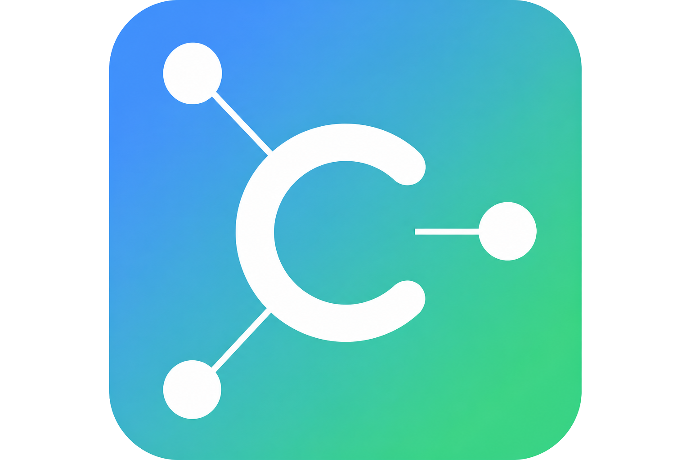

Локальная сеть учебной группы и раздача материалов
Имена устройств запрашиваются по сети (DNS, NetBIOS, ping). Для ClassHub — имя компьютера Windows. Телефоны часто показываются как «iPhone» или «Устройство IP».
| Имя ПК | IP-адрес | Роль | Экран | Ссылка |
|---|---|---|---|---|
| Поиск компьютеров... | ||||
Выберите папку с образом, софтом или скриптами и запустите раздачу.
Папка не выбрана
Ученик нажимает «Показать экран учителю». Учитель видит экран в блоке «Экраны класса» ниже. Если экран не появился — нажмите «Обновить список» на обоих ПК. Нужен порт 8766 в брандмауэре.
Здесь отображаются экраны учеников, которые включили трансляцию. Для проверки откройте в браузере: http://IP_ученика:8766/frame.jpg